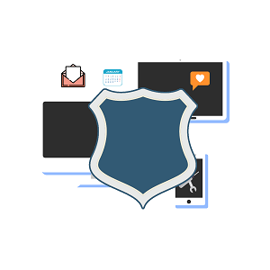
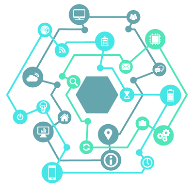
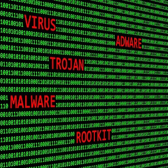

Види кіберзагроз, шкідливого програмне забезпечення і як від них захищатися

Опис галузі
Кібербезпека — це процес застосування заходів безпеки з метою забезпечення конфіденційності, цілісності та доступності даних. Кібербезпека забезпечує захист ресурсів (інформація, комп’ютери, сервери, підприємства, приватні особи). Кібербезпека покликана захистити дані на етапі їх обміну та збереження. До таких заходів безпеки входять контроль доступу, навчання, аудит та оцінка ризиків, тестування, управління та безпека авторизації.
Кібербезпека - сукупність методів і прийомів захисту комп'ютерів, серверів, мобільних пристроїв, електронних систем, мереж і даних від зловмисних атак. Кібербезпека застосовується в самих різних областях, від бізнесу до мобільних технологій. У цьому напрямку можна виділити кілька основних категорій.

Види кібербезпеки
Безпека мереж - дії щодо захисту комп'ютерних мереж від різних загроз, наприклад цільових атак або шкідливих програм.
Безпека додатків - захист пристроїв від загроз, які злочинці можуть заховати в програмах. Заражена додаток може відкрити зловмисникові доступ до даних, які воно має захищати. Безпека застосування забезпечується ще на стадії розробки, задовго до його появи в відкритих джерелах.
Безпека інформації - забезпечення цілісності та конфіденційності даних як під час зберігання, так і при передачі.
Аварійне відновлення і безперервність бізнесу - реагування на інцидент безпеки (дії зловмисників) і будь-яка інша подія, яка може порушити роботу систем або привести до втрати даних. Аварійне відновлення - набір правил, що описують те, як організація буде боротися з наслідками атаки і відновлювати робочі процеси. Безперервність бізнесу - план дій на випадок, якщо організація втрачає доступ до певних ресурсів з-за атаки зловмисників.
Види кіберзагроз
Кіберзлочин - дії, організовані одним або декількома зловмисниками з метою атакувати систему, щоб порушити її роботу або отримати фінансову вигоду.
Кібератака - дії, націлені на збір інформації, в основному політичного характеру.
Кібертероризм - дії, спрямовані на дестабілізацію електронних систем з метою викликати страх або паніку.

Шкідливе програмне забезпечення (ПЗ)
Віруси - програми, які заражають файли шкідливим кодом. Щоб поширюватися всередині системи комп'ютера, вони копіюють самі себе.
Троянці - шкідники, які ховаються під маскою легального ПЗ. Кіберзлочинці обманом змушують користувачів завантажити троянця на свій комп'ютер, а потім збирають дані або пошкоджують їх.
Шпигунське ПЗ - програми, які потай стежать за діями користувача і збирають інформацію (наприклад, дані кредитних карт). Потім кіберзлочинці можуть використовувати її в своїх цілях.
Програми-вимагачі шифрують файли і дані. Потім злочинці вимагають викуп за відновлення, стверджуючи, що інакше користувач втратить дані.
Рекламне ПЗ - програми рекламного характеру, за допомогою яких може поширюватися шкідливе ПЗ.
Ботнети - мережі комп'ютерів, заражених шкідливим ПЗ, які кіберзлочинці використовують у своїх цілях.
Види кібератак
SQL-ін'єкція
Цей вид кібератак використовується для крадіжки інформації з баз даних. Кіберзлочинці використовують уразливості в додатках, керованих даними, щоб поширити шкідливий код на мові управління базами даних (SQL).
Фішинг
Фішинг-атаки, мета яких-обманом роздобути конфіденційну інформацію Користувача (наприклад, дані банківських карт або паролі). Часто в ході таких атак злочинці відправляють жертвам електронні листи, представляючись офіційною організацією.
Атаки Man-in-the-Middle ("людина посередині")
Це атака, в ході якої кіберзлочинець перехоплює дані під час їх передачі – він як би стає проміжною ланкою в ланцюзі, і жертви про це навіть не підозрюють. Ви можете піддатися такій атаці, якщо, наприклад, підключитеся до незахищеної мережі Wi-Fi.
DoS-атаки (атаки типу "відмова в обслуговуванні")
Кіберзлочинці створюють надмірне навантаження на мережі і сервери об'єкта атаки, через що система припиняє нормально працювати і нею стає неможливо користуватися. Так зловмисники, наприклад, можуть пошкодити важливі компоненти інфраструктури і саботувати діяльність організації.
Способи захисту від кібератак
Будьте обережні при виборі мережі
Використання публічних Wi-Fi мереж є серйозним ризиком. Злом ключа загальнодоступної Wi-Fi мережі і перехоплення всередині неї трафіку не є архіскладной завданням, тим більше що існують повністю автоматичні програмні рішення для цього.
Пароль повинен бути надійним
Простий пароль, та ще й однаковий для декількох акаунтів - просто мрія для будь-якого кіберзлочинця.
Придумуючи облікові дані для свого аккаунта, варто дотримуватися наступних критеріїв:
Довжина - не менше 10 символів, краще більше 12
Склад-великі та малі літери, цифри, спеціальні символи
Термін-краще міняти пароль не рідше ніж раз на квартал
Не переходьте по незнайомим посиланнях і не завантажуйте сумнівне ПЗ
Цікавість-не порок, але здатне нашкодити. Найчастіше за красивою обгорткою безкоштовного (а в рідкісних випадках і платного) контенту може ховатися зовсім не те, що ви очікуєте і хотіли б бачити на своїх пристроях.